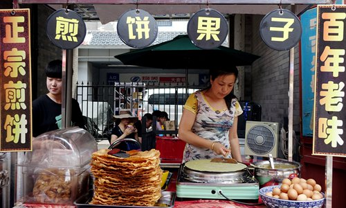
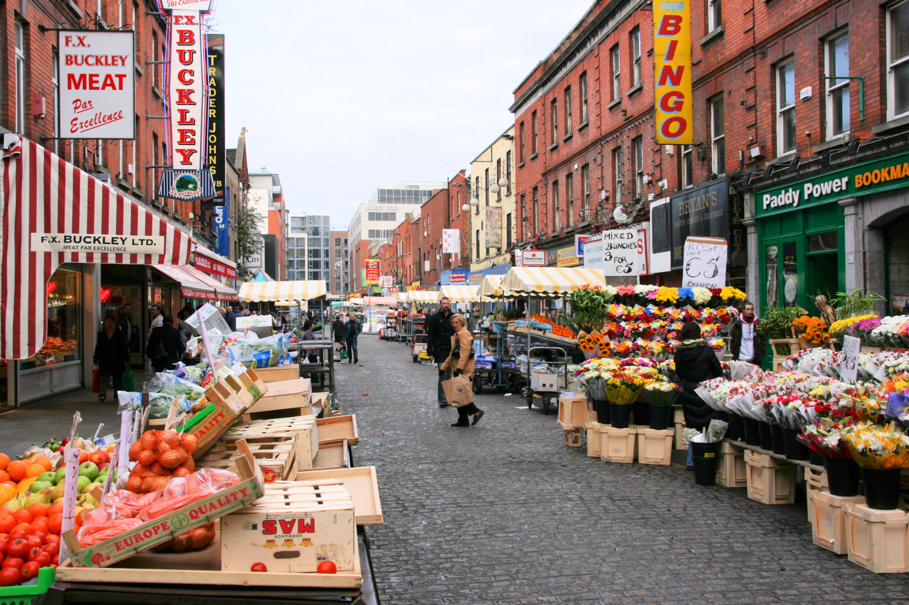

Street food is one of the most exciting ways to experience a country's culture. Across the world, food vendors serve delicious meals directly on the streets, offering travelers authentic flavors at affordable prices.
From the taco stands of Mexico to the noodle carts of Thailand, street food reflects the traditions, ingredients, and creativity of local communities. Many recipes have been passed down through generations and are cooked fresh in front of customers.


Tourists often seek street food because it provides an authentic local experience. Street markets are full of energy, aromas, and colorful displays of food being prepared right in front of customers.